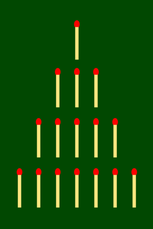
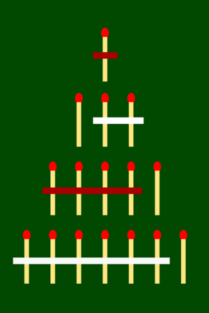
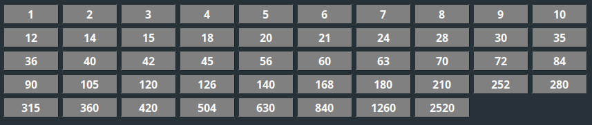

Playing field at the beginning
Turn 1: white begins
Turn 2: red
Turn 3: white
Turn 4: red
Divider Game is a game for two people invented by Christiane Licht. It works on the principle of a Nim or misère game [1]. In 2010 she has won the regional contest "Jugend forscht" (Youth researches) in Nordrhein-Westfalen (Germany) with it [2][3].
In this type of game, the players remove elements from a set.
For example, matches can be put on and taken away, or the
players draw lines on paper and cross them out. The objects are arranged in a pyramid shape.
The players can alternately remove one or more matches from a horizontal plane lying next to each other.
Depending on the game, the player who removes the last match wins (Nim) or who forces the opponent to take the last
match (misère).
Following images show an example of how this looks like.
|  | |
|
|
 |
Playing field at the beginning |
Turn 1: white begins |
Turn 2: red |
Turn 3: white |
Turn 4: red |
In this example, the game ends very quickly, as the players each take large groups of matches. Player white takes away the last remaining group of matches in turn 3. From here on, players can only remove individual elements and cannot influence the outcome anymore.
The divider game combines the game type of misère with number theory in a clever way. Instead of playing with horizontally arranged objects, you play with numbers and their dividers. If a number is removed, all numbers that have this value as divisors are also removed. For example a 3 removes 6, 9, 12 etc.
The playing field is constructed from the dividers of an arbitrarily selectable starting number. The default value is 2520.

In order to have enough playing fields, it is recommended to choose numbers with many dividers. Best in the range between 1.000 and 10.000.
The players take turns in choosing a number and removing fields from the game. Similar to the game principle of misère, the player who has to click (or clicks) on the 1 loses. Which player starts can be determined at the start of the game.
It is possible to play against a computer opponent. Chose 1P/Computer under Game type.
The user can choose between different strategies of the computer opponent. The following strategies are currently available:
| Strategy | Description |
|---|---|
| Random | The computer chooses a number randomly |
| Highest | The computer always chooses the highest possible number |
| Lowest | The computer always chooses the lowest possible number |
The game can be used well at school to reinforce the concepts of divider and divisibility.
The divider game picks up a game theory question: Is there always an optimal winning move for the player who starts, no matter what numbers the other player subsequently strikes? With number-theoretical methods one can develop an optimal winning strategy.
The well-known game Tic-Tac-Toe does not have an optimal winning strategy.
If both players play optimally, the game always ends in a draw.
In Connect Four, on the other hand, it is possible that the starting player always wins - provided he plays optimally.
Even if the other player plays optimally, they cannot win.
[1] More information about Nim (Wikipedia)
https://en.wikipedia.org/wiki/Nim
[2] Reference to Jugend forscht (German)
https://www.jugend-forscht.de/projektdatenbank/das-teilerspiel-teilen-oder-nicht-teilen-das-ist-hier-die-frage.html
[3] Reference to Jugend forscht (German)
https://www.kappenberg.com/hosted/jufo/arbeiten.php5?jahr=-1&eintrag=1206
Nim game images
Author (pseudonym) Uncopy.
Source https://commons.wikimedia.org/wiki/File:NimGame.svg.
Licensed under CC BY-SA 3.0
{kind=link}